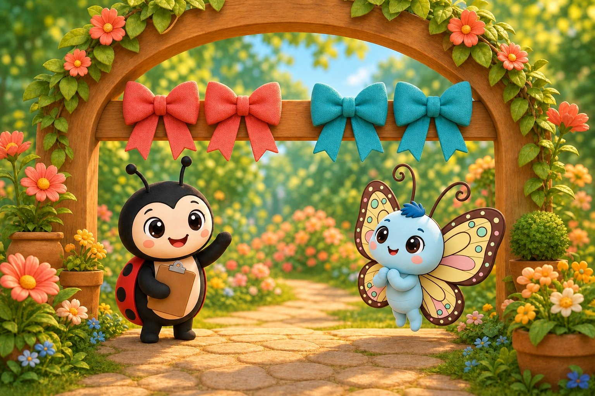
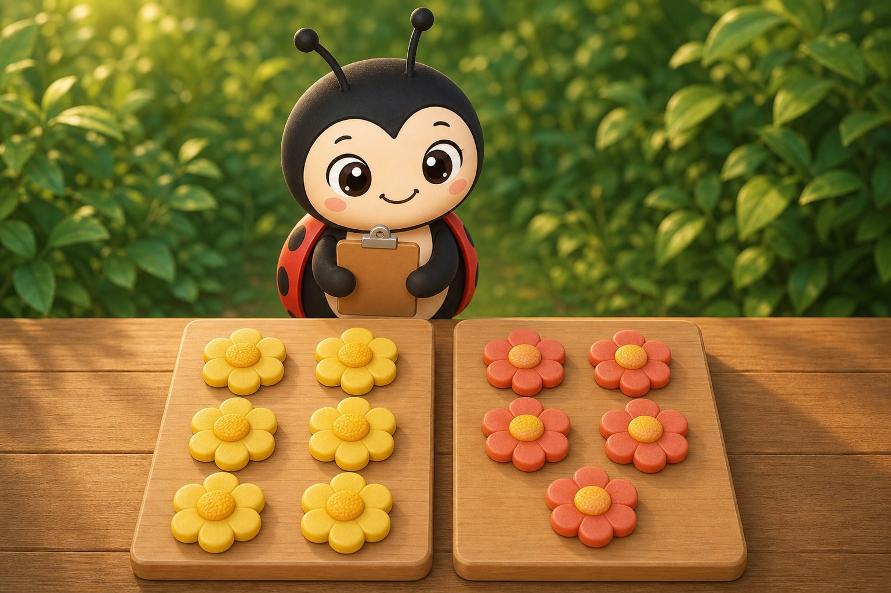
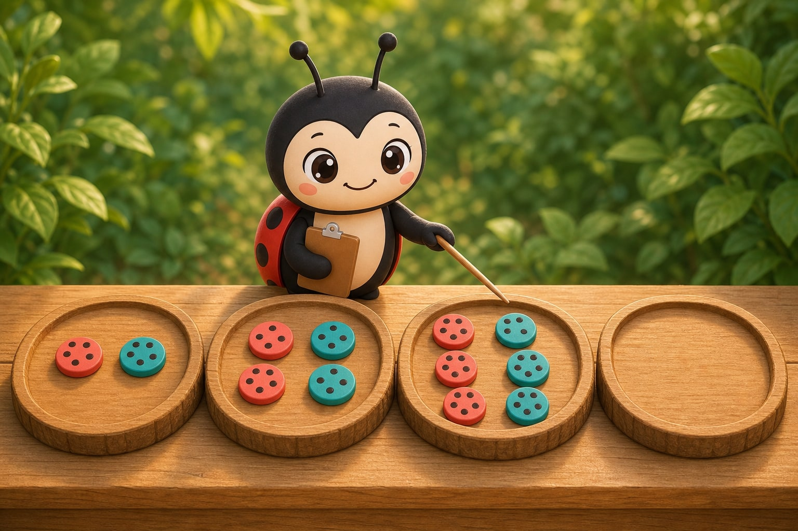
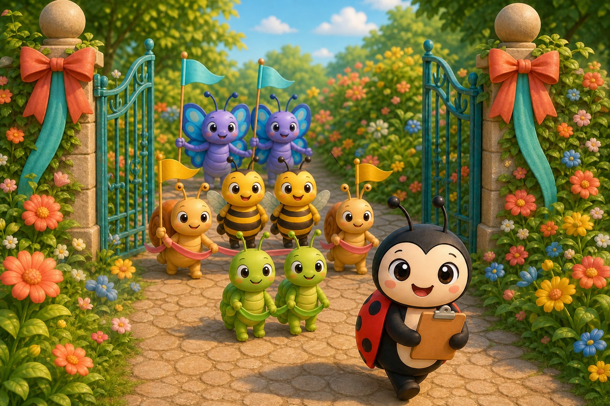

7 printed pages · 1.7 MB · A4 or US Letter. Download PDF · Open PDF to printOpens in a new tab. Use the PDF viewer's Print control. To use less ink, read online and choose only the questions on page 7 in Print.
Page 1 of 6 · Flags for the Parade
Luckybug clips a small set of bright flags together for the garden parade. Flutter-Butter checks whether every flag has a partner. They decide every parade group should try marching in pairs.
Try it: Is 2 odd or even?
Odd
Even
Show the answer
Even. Two is even. Both flags have a partner.
Page 2 of 6 · One Without a Partner
A little team of ladybug drummers arrives. Luckybug places a pair side by side, but another drummer still waits nearby. The little drummer does not mind leading, and the friends wonder what one leftover tells them.
Try it: Is 3 odd or even?
Odd
Even
Show the answer
Odd. Three is odd. One drummer is left over.

Page 3 of 6 · Four Fluttering Ribbons
Flutter-Butter carries a bundle of ribbons. Luckybug places them two by two until every ribbon has a partner. The paired bows can decorate both sides of the parade arch.
Try it: How many pairs are in 4?
1 pair
2 pairs
3 pairs
Show the answer
2 pairs. Four makes two complete pairs.

Page 4 of 6 · The Crooked Flower Row
Two flower rows line the path. One row settles into tidy pairs. The other has one bloom leaning beyond the last pair. Luckybug checks the leftovers instead of guessing from the row length.
Try it: Which number is odd?
6
5
Both
Show the answer
5. Five is odd because one flower is left over.

Page 5 of 6 · The Next Parade Group
The parade board shows three growing groups, then an empty space. Luckybug taps each group while Flutter-Butter listens for the next number that can still split into pairs.
Try it: What comes after 6 in this pattern?
7
8
9
Show the answer
8. Eight comes next when we count by twos.

Page 6 of 6 · Everyone Belongs
The marchers reach the garden gate. Friends stand together in pairs, and Luckybug proudly leads at the front. The parade has room for pairs and leaders, and every friend belongs.
Try it: Is 9 odd or even?
Odd
Even
Show the answer
Odd. Nine is odd: four pairs and one leader.
The end · Great counting
Nine friends marched in the parade. Why did one of them walk at the front?
Talk about the answer
Nine makes four pairs with one left over, because nine is odd. The one left over became the leader, so nobody was left out.
Every marcher found a place! You made pairs, spotted leftovers, and discovered odd and even numbers. SnackPack 123 Counting has more number stories, counting games and ten-frames.